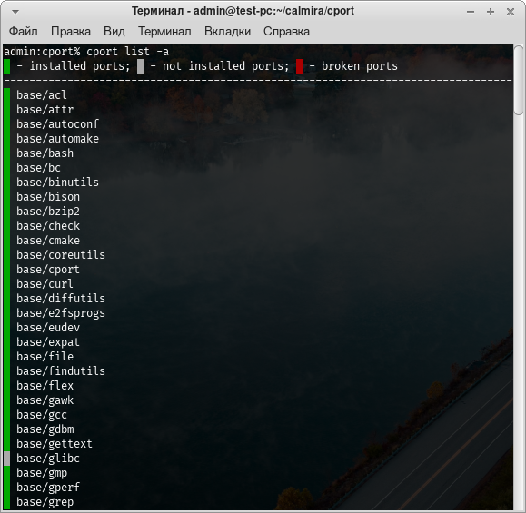
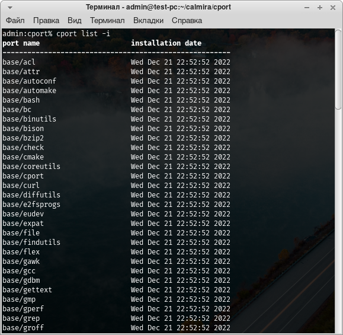
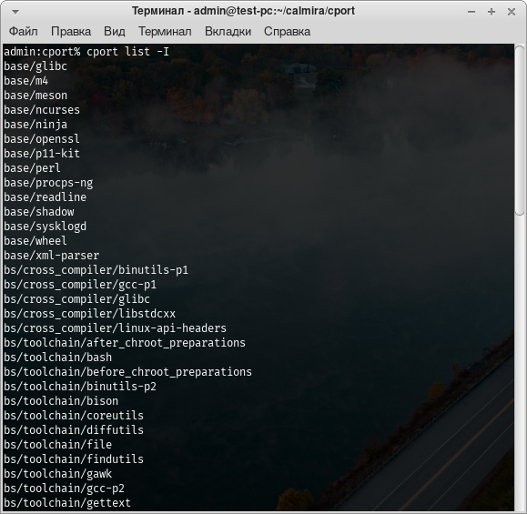

Управление программным обеспечением
TODO
- Зависимости
- Установка по
- Удаление по
- Обновление по
- Обновление системы портов
- Просмотр информации о ПО
- Список портов
Всё программное обеспечение в Calmira GNU/Linux-libre собирается из исходного кода. Для многих людей это достаточно сложный и утомительный процесс, поэтому в системе присутствует средство для автоматизации этого процесса: система портов и программа, которая с ней взаимодействует.
Эта вещь называется "системой портов" потому, что она может функционировать на различных архитектурах процессора.
Система портов
Система портов представляет собой набор файлов в /usr/ports. В этой директории
существует ряд поддиректорий, которые являются категориями ПО, сортирующее это
ПО по предназначению. К примеру, поддиректория base/ содержит в себе все
системные порты, поддиректория editors/ содержит в себе порты текстовых
редакторов.
В категориях расположены ещё одни поддиректории - это либо каталоги с самими
портами (имя каталога = имя порта), либо подкатегории. Например, подкатегория
base/efi содержит в себе порты для обеспечения корректной загрузки системы на
UEFI.
Как различать каталог с портом от каталога с подкатегорией портов? Очень
просто. В подкатегориях содержатся ещё одни каталоги, в которых расположены
порты, принадлежащие данной подкатегориию. В директории порта же находятся
текстовые файлы, основные из них: install, port.toml и files.list. Об их
предназначении далее.
Строение порта
Нахождение порта в файловой системе
Порт - это директория в одной из (под)категорий в /usr/ports. Когда мы
называем имя порта, мы указываем его по следующему примеру: категория/имя.
Т.е. указываем путь до директории порта, опуская /usr/ports. Например, порт,
находящийся по адресу /usr/ports/base/acl в руководстве и прочей документации
будет указываться как base/acl. Тоже самое нужно указывать и при работе с
менеджером системы портов cport, речь о котором будет в следующей части этой
страницы.
Файлы в каталоге порта
Порт - это набор определённых файлов, содержащих сведения о портируемом ПО, инструкции по сборке этого ПО из исходного кода и список файлов, которые этот порт устанавливает в систему:
port.toml- информация о портируемом ПО. Содержит сведения об имени пакета, его версии, краткое описание, информация о сборщике данного порта, список зависимостей и прочие подобные сведения.install- исполняемый BASH-скрипт, содержащий инструкции по сборке ПО из исходного кода.files.list- список файлов, которые будут установлены в систему этим портом.
Кроме того, есть ряд необязательных файлов:
README.md- Markdown-файл, содержащий сведения из файлаport.toml. Предназначен для формирования этой документации.files/- директория, содержащая дополнительные файлы порта, такие, как сторонние рекомендуемые конфигурационные файлы или патчи.description- файл с расширенным описанием порта (т.к. описание вport.tomlограничено 1й строкой, файлdescriptionможет содержать произвольный объём информации).
Обратите внимание!
Глава 2 является вводной, поэтому здесь не будет расширенных сведений о системе портов и управлении программным обеспечением. Для получения дополнительных сведений см. главу 3.
Менеджер системы портов cport
cport предназначен для управления системой портов. Без него СП - просто набор ненужных никому файлов. cport же выполняет основные действия по работе с СП: чтение конфигурационного файла порта, скачивание и распаковка архивов с исходным кодом, исполнение сборочных инструкций порта и ведение локальной базы данных установленного в систему ПО.
Без cport пользователю самостоятельно приходилось бы собирать и хранить сведения об установленном в систему программном обеспечении, самостоятельно скачивать и распаковывать архив с исходниками ПО, а также запускать сборочные инструкции ПО. Данный метод не является безопасным, а cport выполняет множество проверок портов и дистрибутива перед исполнением каких-либо действий.
Иначе говоря, cport автоматизирует рутинные действия пользователей и администраторов, к тому же, избавляя их от выполнения проверок и тестов на совместимость с дистрибутивом Calmira GNU/Linux-libre, например.
Возможности cport
- Установка ПО
- Удаление ПО
- Сбор, хранение и просмотр информации о ПО
- Ведение локальной базы данных установленного в систему ПО
- Обслуживание системы портов (проверка на ошибки, поддержание её в актуальном состоянии)
- Обновление ПО до новой версии
- etc.
Установка программного обеспечения
Для того, чтобы установить какой-либо порт, используется ключ -i (полная
версия: --install):
# cport -i PORT_NAME
Вместо PORT_NAME подставьте имя нужного порта,
например, base/acl. Кроме того, вы можете указать
несколько портов. Они будут собраны в указанной вами последовательности.
Обратите внимание!
cport не обрабатывает зависимости! Поэтому, если у программы есть зависимости, их вам нужно установить первыми, а уже потом собрать исходный порт.
Перед началом установки будет выведено следующее сообщение:
Selected ports:
llvm-15.0.1
How much space will be taken up on the disk: 3891.2 Mb
:: Continue? [Y/n] y
В секции Selected ports отображается список выбранных портов. Например, вы
устанавливаете порт general/llvm командой cport -i general/llvm. Вывод в
секции выбранных портов будет таким же, как в показано выше: отображается не имя
порта(ов), а имя пакета (указано в port.toml порта) и его версия (версия
указывается через дефис: -).
Далее показывается место, которое будет занято портом(портами) на диске.
После чего вас поприветствует приглашение к вводу ответа:
:: Continue? [Y/n]
Если вы согласны продолжить работу, введите y и нажмите Enter. В
противном случае введите n и нажмите Enter.
В том случае, если у порта есть какие-либо необходимые (required)
зависимости, которые не установлены в систему, вывод будет немного другим:
Selected ports:
xterm-370
Ports that are not installed on the system:
xorg/x11-minimal/xapps-0.1 xorg/x11-minimal/xcb-util-0.4.0 xorg/x11-minimal/xbitmaps-1.1.2 xorg/x11-minimal/mesa-21.3.6 general/libpng-1.6.37
How much space will be taken up on the disk: 836.2 Mb
:: Continue? [Y/n] y
Здесь появилась новая секция: Ports that are not installed on the system. В
том случае, если вы видите эту секцию со списком необходимых портов, прервите
сборку исходного порта и установите все недостающие зависимости из этого списка.
Только после их установки устанавливайте искомый порт.
После того, как вы ответили утвердительно (y + Enter) на вопрос о
продолжении сборки, cport начнёт скачивание и распаковку архива с исходным
кодом:
==> Download port 'editors/gvim'...
100% [....................................................] 15996348 / 15996348
[✓] Download OK
==> Validating source file with md5sums... Passed
==> Extracting 'editors/gvim'...
Обратите внимание!
При скачивании порта будет показываться прогресс операции.
После скачивания архива будет произведена проверка корректности скачивания. Для
этого сравниваются MD5-контрольные суммы и SHA256-контрольные суммы, указанные в
port.toml порта и вычесленные у скачанного файла.
В том случае, если ошибок нет, cport приступит к распаковке архива. После распаковки он начнёт исполнение сборочных инструкций порта:
==> Building port 'editors/gvim'...
--== WARNING! ==--
Attention! It is not possible to build this package in multiple
threads, a single threaded build will be used.
configure: creating cache auto/config.cache
checking whether make sets $(MAKE)... yes
checking for gcc... gcc
checking whether the C compiler works... yes
checking for C compiler default output file name... a.out
checking for suffix of executables...
checking whether we are cross compiling... no
...
Первая строка (Building port '...) сигнализирует о том, что началось
исполнение сборочных инструкций порта. Все следующие за ней строки - это
информация, которую выводит файл install - наши сборочные инструкции. Эта
информация отображает прогресс выполнения и конкретные действия, которые
выполняются. В случае возникновения ошибки эта информация будет неплохим
средством для поиска причин возникновения неудачи и способа её решения.
Внимание!
В терминал выводится довольно много информации. Это нормально.
В том случае, если порт установлен корректно, в конце вы получите примерно следующее сообщение:
[✓] Build OK!
==> Updating the database... OK
==> Checking the port 'general/llvm' for correct installation... [✓] Checking completed successfully
==> Clearing the cache...
[✓] 161 files was deleted!
Оно говорит вам о том, что:
- Сборка завершена успешно.
- В базу данных добавлена информация об установленном(ых) порте(ах).
- Проверка на корректность установки порта(ов) завершилась без ошибок (проверяется наличие установленных в систему файлов).
- Очищен кеш cport с файлами исходного кода и копиями установленных в систему файлов.
В том же случае, если во время сборки порта произошла ошибка, будет выведено следующее сообщение:
[!] Build instructions was returned a value other then 0!
Оно означает, что работа сборочных инструкций завершилась с ошибкой. Если вы видите это сообщение, то выше обязательно должна быть отображена причина. Прочитайте вывод выше этого сообщения для поиска и устранения неисправности.
В случае ошибки не будут выполнены следующие действия:
- Устанавливаемый порт не будет добавлен в базу данных.
- Следовательно, не будет проверки на корректность установки порта.
- Не будет очищен кеш - это сделано специально для того, чтобы пользователю были доступны все файлы исходного кода, логи и прочие подобные вещи, которые могут понадобиться для исправления ошибки.
Обратите внимание!
Распакованные файлы архива с исходным кодом порта содержатся в директории
/usr/src. Все логи сборки и прочие файлы содержатся именно там. Но скачанные архивы с исходным кодом ПО содержатся в директории/var/cache/cport/downloads.
Удаление программного обеспечения
Для удаления используется ключ -r (--remove):
# cport -r PORT_NAME
МСП пройдётся по файлу files.list порта. Каждый файл, который указанный порт
устанавливает в систему, указывается на новой строке files.list. На основе
содержимого этого файла cport составляет список файлов. После чего проходится по
этому списку и удаляет из него те файлы, которые в системе отсутствуют. По
завершению этого процесса все существующие в системе файлы удаляются.
cport также спросит у вас продолжение работы:
========================= Removing port 'editors/gvim' =========================
:: Continue? [y/N]
Обратите внимание!
На данный момент cport не выводит информацию об удалении. Это скоро будет исправлено.
В случае согласия он приступит к удалению:
==> Remove the 'editors/gvim' files from the system...
==> System check...
==> Remove port 'editors/gvim' from database... OK
Просмотр информации о ПО
Для того, чтобы просмотреть информацию о порте(ах) используется ключ -I
(--info):
# cport -I PORT_NAME
Будет прочитано содержимое файла port.toml указанного порта, после чего
результат парсинга будет выведен на экран:
==================== Information about port 'base/attr' ====================
Base information:
name : attr
version : 2.5.1
description : Commands for Manipulating Filesystem Extended Attributes.
maintainer : Sergey Gaberer <nordic.dev@pm.me>
releases : v2.0a1 v2.0a2 v2.0a3
priority : system
usage : 4.4
upgrade_mode: soft
build_time : 0.1
installed : True
Dependencies:
required : base/libtool
В терминал будет выведена основная информация, взятая из файла port.toml:
- name - имя программы (а не порта - имя порта и так уже известно)
- version - версия порта/программы
- description - краткое описание порта
- maintainer - информация о создателе и/или сопровождающем порта
- releases - список релизов Calmira GNU/Linux-libre, с которыми совместим данный порт
- priority - приоритет порта (
system- системный,user- пользовательский; системные порты нельзя удалять из системы во избежание ошибок в её работе) - usage - сколько занимает место порт в файловой системе после установки (в мегабайтах)
- upgrade_mode - режим обновления (
soft- порт просто переустанавливается,hard- все файлы порта удаляются, после чего устанавливается новая версия порта) - build_time - примерное время сборки порта (в единицах, аналогичных SBU из руководства "Linux From Scratch")
- installed - установлен ли порт в систему (
True- порт установлен,False- порт не установлен)
Далее идёт секция с описанием зависимостей порта:
- required - необходимые зависимости
- recommend - рекомендуемые зависимости
- optional - опциональные зависимости
Обратите внимание!
Какого-то из пункта с описанием типов зависимостей в выводе может и не быть (ровным счётом как и у ПО может не быть определённого типа зависимостей). Иногда возникают такие ситуации, когда секция
Dependenciesвообще пуста - ничего страшного или необычного в этом нет.
Просмотр списка портов
cport позволяет выводить и список всех портов, которые присутствуют в СП. Это
нужно, к примеру, для поиска нужного ПО, либо для просмотра всех портов, которые
установлены в системе. Для просмотра списка портов используется опция list.
В том случае, если она передаётся МСП без указания дополнительных аргументов, будет выведен неформатированный список всех портов в СП:
% cport list
base/acl
base/attr
base/autoconf
base/automake
base/bash
general/vagina
general/valgrind
general/wf-recorder
general/which_orig
general/which_script
general/wl-clipboard
general/wlr-randr
general/wofi
net/curl
net/libpsl
net/links
net/lynx
postcpl/btrfs-progs
postcpl/cracklib
postcpl/dosfstools
postcpl/fuse
...
Далее, вы можете передавать опции list дополнительные ключи:
-a- форматированный вывод всех портов;-i- вывод только установленных в систему портов;-I- вывод только НЕ установленных в систему портов;-b- вывод портов с ошибками (отсутствует какой-то файл, либо статус порта (установлен/не установлен) определить невозможно).
Форматированный вывод всех портов
Вывод поделён на две колонки: первая колонка состоит из одного символа, который символизирует статус порта. Вторая колонка (напротив первой) - имя порта.
- Если первая колонка зелёного цвета - порт установлен в систему.
- Если первая колонка серого цвета - порт не установлен.
- Если первая колонка красного цвета - порт с ошибкой.

Вывод только установленных в систему портов
Вывод поделён на две колонки: в первой колонке имя порта, во второй - дата его установки в систему, либо дата его добавления в базу данных установленного ПО. Иногда возникают ситуации, когда необходимо пересобрать базу данных, в результате чего информация о дате установки портов может потеряться, в результате чего она заменяется информацией о времени добавления порта в БД.

Вывод только НЕ установленных в систему портов
Здесь просто выводится список не установленных в систему портов.
